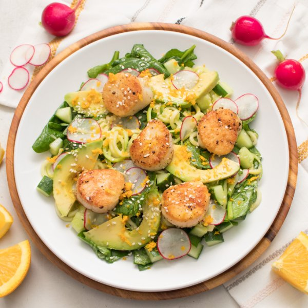

Scallop Zucchini Noodle Salad with Spinach, Radish & Citrus Dressing

Prep Time
35 min
Nutrition (per serving)
564 kcalCalories
27.9 gProtein
31.6 gCarbs
39.1 gFat
Full nutrition table
| Calories | 564 kcal |
| Total fat | 39.1 g |
| Saturated fat | 5.7 g |
| Trans fat | 0 g |
| Cholesterol | 40.8 mg |
| Sodium | 745.1 mg |
| Carbohydrates | 31.6 g |
| Fiber | 12.6 g |
| Sugars | 11.2 g |
| Protein | 27.9 g |
| Potassium | 1890.7 mg |
| Calcium | 133.5 mg |
| Iron | 3.7 mg |
| Vitamin A | 707.4 IU |
| Vitamin C | 83.4 mg |
| Vitamin D | 1.7 IU |
Cookware
Ingredients
- 2avocados
- 1 (5 oz) pkgbaby spinach
- 1English cucumber
- 2 (1 inch) piecesginger root
- 1orange
- 1 bunchradish
- 1 ½ lbsea scallops
- 4 mediumzucchini squash
- apple cider vinegar
- black pepper
- extra virgin olive oil
- salt
- sesame seeds
Steps
- Wash and dry the fresh produce. (Skip the spinach if it came pre-washed.)1 orange
2 (1 inch) pieces ginger root
4 medium zucchini squash
1 bunch radish
1 English cucumber
1 (5 oz) pkg baby spinach
2 avocados - Zest orange into a small bowl and set aside. Juice orange into a large bowl.
- Peel and mince or grate ginger; add to the bowl with the orange juice along with oil, vinegar, and salt. Whisk to combine the dressing and set aside.2 tbsp extra virgin olive oil
4 tsp apple cider vinegar
½ tsp salt - Trim zucchini and, using a julienne (or regular) peeler, peel into thin noodles.
- Preheat a large skillet over medium-high heat. Once it is hot, add oil and swirl to coat the bottom.2 tbsp extra virgin olive oil
- Add zucchini noodles and salt to the skillet; cook, stirring occasionally, until just tender, 2-3 minutes. Transfer noodles to the bowl with the dressing and toss to coat. (Reserve skillet for later use.)½ tsp salt
- Trim and thinly slice radishes. Trim and medium dice cucumber. Add both to the bowl with the zucchini noodles and set aside.
- Return the skillet to medium-high heat.
- While the skillet heats up, pat the scallops dry with paper towels and place on a plate; rub with oil and season with salt and pepper on both sides.1 ½ lb sea scallops
2 tbsp extra virgin olive oil
½ tsp salt
½ tsp black pepper - Once the skillet is hot, add scallops in a single layer; cook until they develop a nice sear and are opaque throughout, 1½-2 minutes per side. Work in batches if necessary. Once done, transfer to a clean plate.
- Meanwhile, add spinach to the bowl with the zucchini and toss to combine the salad.
- Halve and pit the avocados. Slice thinly while still in skin, then scoop out.
- To serve, divide salad between plates or bowls and top with avocado, scallops, orange zest, and sesame seeds. Enjoy!4 tsp sesame seeds